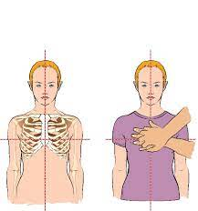
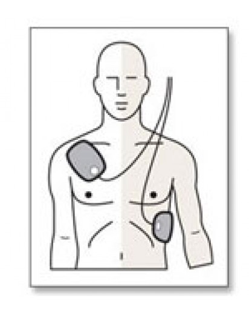

Hand Position
Hand Placement

Start continuous compressions at a rate of 100-120 bpm. If there is an AED near by, ask someone to get it for you.
You do not need to give breaths. Compress 3 inches into the chest; it is okay and common if you feel their ribs crack.
The Beat to Follow
Use this video to pace your compressions
AED Placement
Turn on the AED and follow the instructions. Pad placement should be placed on the to left and bottom right of the chest.
Most pads have pictures on them to follow. Do not use if victim is wet.When asked to shock, ensure that no one is
touching the victim.

If the victim becomes conscious or starts breathing, start supporting their breathing.